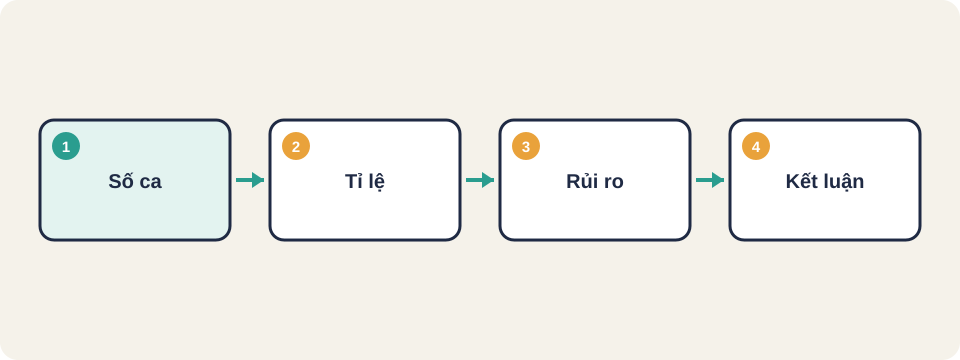
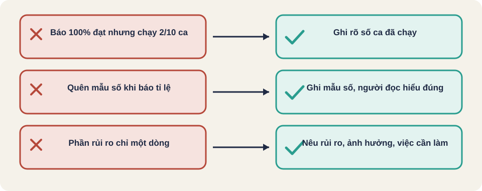

Hình vẽ gốc, dùng để minh họa thứ tự các bước chính của bài.
Báo cáo tiến độ kiểm thử: đạt, lỗi, chưa chạy và tỉ lệ hoàn thành. Viết để người đọc ra quyết định.

Hình vẽ gốc, dùng để minh họa thứ tự các bước chính của bài.
Thuật ngữ trong slide này: Rủi ro (risk): Khả năng một sự cố xảy ra, nhân với mức thiệt hại nếu nó xảy ra.
Báo cáo thực thi kiểm thử cho người đọc biết đã kiểm gì, kết quả ra sao, còn rủi ro gì, và có nên phát hành không. Người đọc có thể là quản lý dự án, chủ sản phẩm hoặc khách hàng.
Nguồn: SoftwareTestingHelp, "Test Execution Report" [đã đọc].
Thuật ngữ trong slide này: Rủi ro (risk): Khả năng một sự cố xảy ra, nhân với mức thiệt hại nếu nó xảy ra.
| Phần | Nội dung |
|---|---|
| Tiêu đề | Ngày, chủ đề, người nhận, tệp đính kèm |
| Phạm vi | Những gì đã kiểm và những gì không kiểm trong đợt này |
| Tổng số ca | Số ca lên kế hoạch, số ca đã chạy trong ngày, tổng từ đầu |
| Số lỗi theo trạng thái | Lỗi mở, đã sửa, đã đóng, theo ngày và tính đến hiện tại |
| Tỉ lệ | Tỉ lệ ca đạt, mật độ lỗi, tỉ lệ lỗi nghiêm trọng |
| Rủi ro | Lỗi nghiêm trọng chưa đóng, lỗi chặn, môi trường bị gián đoạn |
| Kết luận | Trạng thái tổng thể, các việc tiếp theo, đầu vào cần từ nhóm khác |
Nguồn: [đã đọc]. Bài nguồn không có mục "Phạm vi" riêng, phần này là cách tổ chức của người soạn bài.
Thuật ngữ trong slide này: Mật độ lỗi (defect density): Số lỗi trên một đơn vị kích thước, thường là trên mỗi nghìn dòng code. · Rủi ro (risk): Khả năng một sự cố xảy ra, nhân với mức thiệt hại nếu nó xảy ra.
Tổng: 40 ca đã lên kế hoạch
Đã chạy: 30 ca (đạt 24, lỗi 6, chưa chạy 10)
Tỉ lệ đạt trên ca đã chạy: 24 / 30 = 80%
Tỉ lệ hoàn thành: 30 / 40 = 75%
Ghi rõ mẫu số, nếu không người đọc sẽ hiểu saiThuật ngữ trong slide này: Mẫu số (denominator): Tổng số dùng để tính một tỉ lệ. Báo tỉ lệ mà không nói mẫu số thì người đọc dễ hiểu sai.
Nguồn: [đã đọc].
Thuật ngữ trong slide này: Rủi ro (risk): Khả năng một sự cố xảy ra, nhân với mức thiệt hại nếu nó xảy ra.
Một đội báo "100% đạt" trong khi chỉ chạy 2 trên 10 ca. Con số đúng về mặt toán, nhưng gây hiểu nhầm về độ phủ. Bài nguồn nhấn mạnh: báo cáo sự thật là một chuyện, báo cáo những "sự thật khéo" để làm đẹp là chuyện khác.
Nguồn: [đã đọc], ý về "smart facts".
Rủi ro 1: Lỗi nghiêm trọng #214 (thanh toán bị trừ hai lần) chưa đóng.
Ảnh hưởng: không nên phát hành.
Việc cần: chờ bản vá, kiểm lại trong 1 ngày.
Rủi ro 2: Môi trường thử bị gián đoạn 2 ngày.
Ảnh hưởng: 12 ca chưa chạy.
Việc cần: nhóm hạ tầng khôi phục môi trường.Thuật ngữ trong slide này: Rủi ro (risk): Khả năng một sự cố xảy ra, nhân với mức thiệt hại nếu nó xảy ra.
Báo cáo: "Đã kiểm 95% chức năng, không có lỗi". Trong đó 95% là số ca đã viết, và 30% trong số đó chưa được chạy. Hãy viết lại báo cáo này để người đọc không hiểu sai.
Nguồn: FreeLearningResourcesForSoftwareTesters, mục "Test Reporting". Liên kết PDF của Rex Black không mở được khi soạn bài.

Thuật ngữ trong slide này: Mẫu số (denominator): Tổng số dùng để tính một tỉ lệ. Báo tỉ lệ mà không nói mẫu số thì người đọc dễ hiểu sai. · Rủi ro (risk): Khả năng một sự cố xảy ra, nhân với mức thiệt hại nếu nó xảy ra.
Mẫu số (denominator)
Mật độ lỗi (defect density)
Rủi ro (risk)
Thuật ngữ trong slide này: Mẫu số (denominator): Tổng số dùng để tính một tỉ lệ. Báo tỉ lệ mà không nói mẫu số thì người đọc dễ hiểu sai. · Rủi ro (risk): Khả năng một sự cố xảy ra, nhân với mức thiệt hại nếu nó xảy ra.